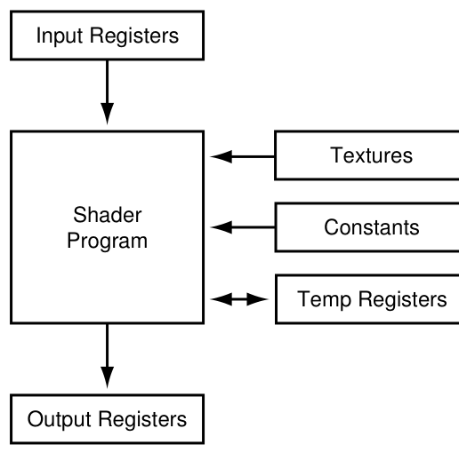
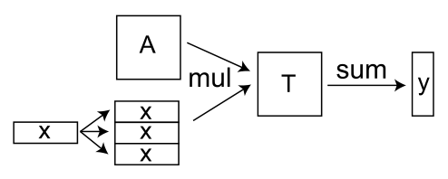
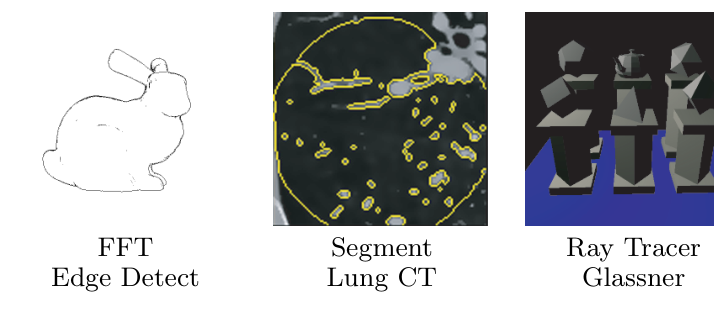
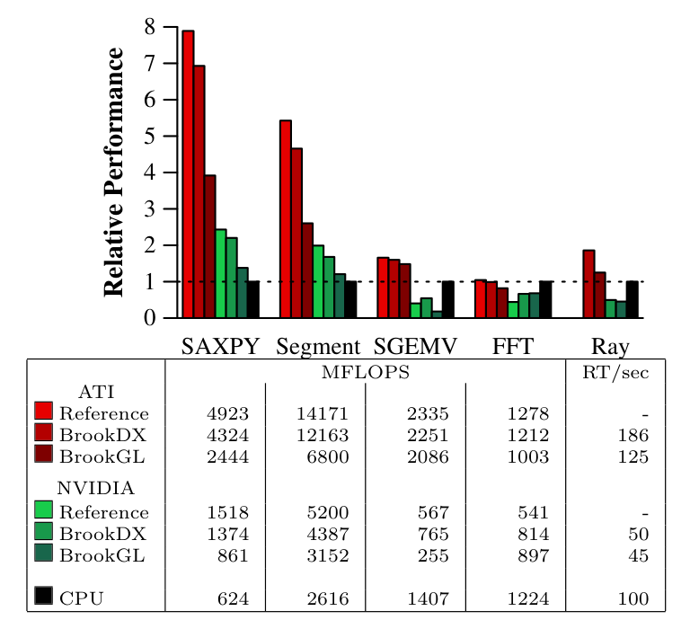
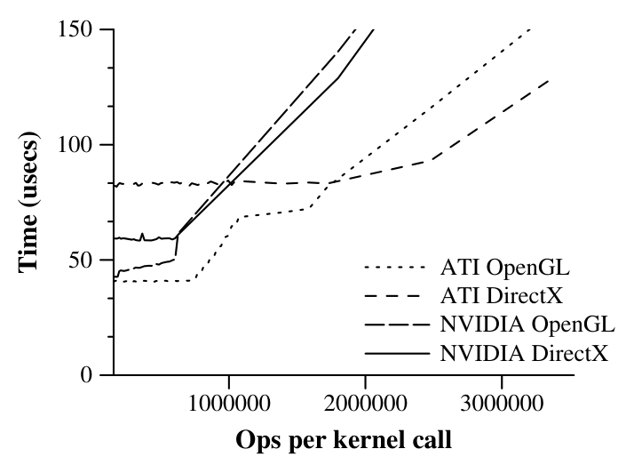

Ian Buck, Tim Foley, Daniel Horn, Jeremy Sugerman, Kayvon Fatahalian, Mike Houston, Pat Hanrahan — Stanford University
Ian Buck、Tim Foley、Daniel Horn、Jeremy Sugerman、Kayvon Fatahalian、Mike Houston、Pat Hanrahan —— 斯坦福大学
Ian Buck, Tim Foley, Daniel Horn, Jeremy Sugerman, Kayvon Fatahalian, Mike Houston, Pat Hanrahan — Stanford University
Ian Buck、Tim Foley、Daniel Horn、Jeremy Sugerman、Kayvon Fatahalian、Mike Houston、Pat Hanrahan —— 斯坦福大学
This draft keeps one English paragraph aligned with one Chinese paragraph. This paper has no public LaTeX source, so the text and figure regions were extracted from the PDF and need proof-reading. Re-run python3 ../../../tools/render_bilingual.py . after editing.
底稿按段对齐：一段英文对一段中文。本文没有公开的 LaTeX 源文件，正文与图片区域均从 PDF 提取并已人工校对。改完后运行 python3 ../../../tools/render_bilingual.py . 重新生成阅读页。
In this paper, we present Brook for GPUs, a system for general-purpose computation on programmable graphics hardware. Brook extends C to include simple data-parallel constructs, enabling the use of the GPU as a streaming coprocessor. We present a compiler and runtime system that abstracts and virtualizes many aspects of graphics hardware. In addition, we present an analysis of the effectiveness of the GPU as a compute engine compared to the CPU, to determine when the GPU can outperform the CPU for a particular algorithm. We evaluate our system with five applications, the SAXPY and SGEMV BLAS operators, image segmentation, FFT, and ray tracing. For these applications, we demonstrate that our Brook implementations perform comparably to hand-written GPU code and up to seven times faster than their CPU counterparts.
本文提出 Brook for GPUs，一个在可编程图形硬件上进行通用计算的系统。Brook 扩展了 C 语言，加入了简单的数据并行结构，使 GPU 可以作为流式协处理器使用。我们给出了一个编译器和运行时系统，它对图形硬件的许多方面进行了抽象和虚拟化。此外，我们分析了 GPU 相对于 CPU 作为计算引擎的有效性，以判断对于某个特定算法 GPU 何时能够胜过 CPU。我们用五个应用评估了该系统：SAXPY 与 SGEMV 两个 BLAS 算子、图像分割、FFT 和光线追踪。对于这些应用，我们证明 Brook 实现的性能与手写 GPU 代码相当，并且比对应的 CPU 实现最快可达七倍。
CR Categories: I.3.1 [Computer Graphics]: Hardware Architecture—Graphics processors; D.3.2 [Programming Languages]: Language Classifications—Parallel Languages
CR 分类：I.3.1 [计算机图形学]：硬件体系结构——图形处理器；D.3.2 [程序设计语言]：语言分类——并行语言
Keywords: Programmable Graphics Hardware, Data Parallel Computing, Stream Computing, GPU Computing, Brook
关键词：可编程图形硬件、数据并行计算、流计算、GPU 计算、Brook
In recent years, commodity graphics hardware has rapidly evolved from being a fixed-function pipeline into having programmable vertex and fragment processors. While this new programmability was introduced for real-time shading, it has been observed that these processors feature instruction sets general enough to perform computation beyond the domain of rendering. Applications such as linear algebra [Krüger and Westermann 2003], physical simulation [Harris et al. 2003], and a complete ray tracer [Purcell et al. 2002; Carr et al. 2002] have been demonstrated to run on GPUs.
近年来，商用图形硬件已从固定功能流水线迅速演进为拥有可编程的顶点处理器和片元处理器。尽管这种新的可编程性最初是为实时着色引入的，人们发现这些处理器的指令集足够通用，可以完成渲染领域之外的计算。线性代数 [Krüger and Westermann 2003]、物理模拟 [Harris et al. 2003] 以及完整的光线追踪器 [Purcell et al. 2002; Carr et al. 2002] 等应用都已被证明可以在 GPU 上运行。
Originally, GPUs could only be programmed using assembly languages. Microsoft's HLSL, NVIDIA's Cg, and OpenGL's GLslang allow shaders to be written in a high level, C-like programming language [Microsoft 2003; Mark et al. 2003; Kessenich et al. 2003]. However, these languages do not assist the programmer in controlling other aspects of the graphics pipeline, such as allocating texture memory, loading shader programs, or constructing graphics primitives. As a result, the implementation of applications requires extensive knowledge of the latest graphics APIs as well as an understanding of the features and limitations of modern hardware. In addition, the user is forced to express their algorithm in terms of graphics primitives, such as textures and triangles. As a result, general-purpose GPU computing is limited to only the most advanced graphics developers.
最初，GPU 只能用汇编语言编程。Microsoft 的 HLSL、NVIDIA 的 Cg 和 OpenGL 的 GLslang 允许用高级的、类 C 的编程语言编写着色器 [Microsoft 2003; Mark et al. 2003; Kessenich et al. 2003]。然而，这些语言并不帮助程序员控制图形流水线的其他方面，例如分配纹理内存、加载着色器程序或构造图形图元。因此，实现应用需要对最新图形 API 的大量知识，以及对现代硬件特性与限制的理解。此外，用户被迫用纹理、三角形等图形图元来表达自己的算法。结果是，通用 GPU 计算仅限于最资深的图形开发者。
This paper presents Brook, a programming environment that provides developers with a view of the GPU as a streaming coprocessor. The main contributions of this paper are:
本文提出 Brook，一个让开发者把 GPU 视为流式协处理器的编程环境。本文的主要贡献有：
2.1 Evolution of Streaming Hardware
2.1 流式硬件的演进
Programmable graphics hardware dates back to the original programmable framebuffer architectures [England 1986]. One of the most influential programmable graphics systems was the UNC PixelPlanes series [Fuchs et al. 1989] culminating in the PixelFlow machine [Molnar et al. 1992]. These systems embedded pixel processors, running as a SIMD processor, on the same chip as framebuffer memory. Peercy et al. [2000] demonstrated how the OpenGL architecture [Woo et al. 1999] can be abstracted as a SIMD processor. Each rendering pass implements a SIMD instruction that performs a basic arithmetic operation and updates the framebuffer atomically. Using this abstraction, they were able to compile RenderMan to OpenGL 1.2 with imaging extensions. Thompson et al. [2002] explored the use of GPUs as a general-purpose vector processor by implementing a software layer on top of the graphics library that performed arithmetic computation on arrays of floating point numbers.
可编程图形硬件可以追溯到最早的可编程帧缓冲架构 [England 1986]。最有影响力的可编程图形系统之一是 UNC 的 PixelPlanes 系列 [Fuchs et al. 1989]，其顶点是 PixelFlow 机器 [Molnar et al. 1992]。这些系统把作为 SIMD 处理器运行的像素处理器与帧缓冲存储器嵌入在同一芯片上。Peercy 等人 [2000] 展示了如何把 OpenGL 架构 [Woo et al. 1999] 抽象为一个 SIMD 处理器：每一个渲染 pass 实现一条 SIMD 指令，执行一次基本算术运算并原子地更新帧缓冲。利用这一抽象，他们得以把 RenderMan 编译到带有 imaging 扩展的 OpenGL 1.2 上。Thompson 等人 [2002] 探索了把 GPU 当作通用向量处理器使用：他们在图形库之上实现了一个软件层，对浮点数数组执行算术计算。
SIMD and vector processing operators involve a read, an execution of a single instruction, and a write to off-chip memory [Russell 1978; Kozyrakis 1999]. This results in significant memory bandwidth use. Today's graphics hardware executes small programs where instructions load and store data to local temporary registers rather than to memory. This is a major difference between the vector and stream processor abstraction [Khailany et al. 2001].
SIMD 与向量处理算子的执行过程包括一次读取、一条指令的执行以及一次对片外存储器的写入 [Russell 1978; Kozyrakis 1999]，这会消耗大量内存带宽。而今天的图形硬件执行的是小程序，其中的指令把数据加载到本地临时寄存器并从中存储，而不是直接读写内存。这是向量处理器抽象与流处理器抽象之间的一个主要区别 [Khailany et al. 2001]。
The stream programming model captures computational locality not present in the SIMD or vector models through the use of streams and kernels. A stream is a collection of records requiring similar computation while kernels are functions applied to each element of a stream. A streaming processor executes a kernel over all elements of an input stream, placing the results into an output stream. Dally et al. [2003] explain how stream programming encourages the creation of applications with high arithmetic intensity, the ratio of arithmetic operations to memory bandwidth. This paper defines a similar property called computational intensity to compare CPU and GPU performance.
流编程模型通过流和核函数捕获了 SIMD 或向量模型所不具备的计算局部性。流是一组需要相似计算的记录的集合，而核函数则是施加于流中每个元素的函数。流处理器对输入流的所有元素执行一个核函数，并把结果放入输出流。Dally 等人 [2003] 解释了流编程如何鼓励构建具有高算术密度（arithmetic intensity，即算术运算与内存带宽之比）的应用。本文定义了一个类似的性质，称为计算密度（computational intensity），用于比较 CPU 与 GPU 的性能。

Figure 1: Programming model for current programmable graphics hardware. A shader program operates on a single input element (vertex or fragment) stored in the input registers and writes the execution result into the output registers.
图 1： 当前可编程图形硬件的编程模型。着色器程序处理存放在输入寄存器中的单个输入元素（顶点或片元），并把执行结果写入输出寄存器。
Stream architectures are a topic of great interest in computer architecture [Bove and Watlington 1995; Gokhale and Gomersall 1997]. For example, the Imagine stream processor [Kapasi et al. 2002] demonstrated the effectiveness of streaming for a wide range of media applications, including graphics and imaging [Owens et al. 2000]. The StreamC/KernelC programming environment provides an abstraction which allows programmers to map applications to the Imagine processor [Mattson 2002]. Labonte et al. [2004] studied the effectiveness of GPUs as stream processors by evaluating the performance of a streaming virtual machine mapped onto graphics hardware. The programming model presented in this paper could easily be compiled to their virtual machine.
流式架构是计算机体系结构领域备受关注的课题 [Bove and Watlington 1995; Gokhale and Gomersall 1997]。例如，Imagine 流处理器 [Kapasi et al. 2002] 证明了流式计算对包括图形与图像处理在内的众多媒体应用的有效性 [Owens et al. 2000]。StreamC/KernelC 编程环境提供了一种抽象，使程序员能把应用映射到 Imagine 处理器上 [Mattson 2002]。Labonte 等人 [2004] 通过评估映射到图形硬件上的流式虚拟机的性能，研究了 GPU 作为流处理器的有效性。本文提出的编程模型可以很容易地编译到他们的虚拟机上。
2.2 Programming Graphics Hardware
2.2 图形硬件编程
Modern programmable graphics accelerators such as the ATI X800XT and the NVIDIA GeForce 6800 [ATI 2004b; NVIDIA 2004] feature programmable vertex and fragment processors. Each processor executes a user-specified assembly-level shader program consisting of 4-way SIMD instructions [Lindholm et al. 2001]. These instructions include standard math operations, such as 3- or 4-component dot products, texture-fetch instructions, and a few special-purpose instructions.
ATI X800XT 和 NVIDIA GeForce 6800 [ATI 2004b; NVIDIA 2004] 等现代可编程图形加速器拥有可编程的顶点处理器和片元处理器。每个处理器执行用户指定的汇编级着色器程序，该程序由 4 路 SIMD 指令组成 [Lindholm et al. 2001]。这些指令包括标准数学运算（如 3 分量或 4 分量点积）、纹理读取指令以及少量专用指令。
The basic execution model of a GPU is shown in figure 1. For every vertex or fragment to be processed, the graphics hardware places a graphics primitive in the read-only input registers. The shader is then executed and the results written to the output registers. During execution, the shader has access to a number of temporary registers as well as constants set by the host application.
GPU 的基本执行模型如图 1 所示。对于每个待处理的顶点或片元，图形硬件把一个图形图元放入只读的输入寄存器，然后执行着色器，并把结果写入输出寄存器。执行期间，着色器可以访问若干临时寄存器以及由宿主应用设置的常量。
Purcell et al. [2002] describe how the GPU can be considered a streaming processor that executes kernels, written as fragment or vertex shaders, on streams of data stored in geometry and textures. Kernels can be written using a variety of high-level, C-like languages such as Cg, HLSL, and GLslang. However, even with these languages, applications must still execute explicit graphics API calls to organize data into streams and invoke kernels. For example, stream management is performed by the programmer, requiring data to be manually packed into textures and transferred to and from the hardware. Kernel invocation requires the loading and binding of shader programs and the rendering of geometry. As a result, computation is not expressed as a set of kernels acting upon streams, but rather as a sequence of shading operations on graphics primitives. Even for those proficient in graphics programming, expressing algorithms in this way can be an arduous task.
Purcell 等人 [2002] 描述了如何把 GPU 视为一个流处理器：它对存放在几何体和纹理中的数据流执行以片元或顶点着色器形式编写的核函数。核函数可以用 Cg、HLSL、GLslang 等多种高级类 C 语言编写。然而，即便有了这些语言，应用仍然必须显式调用图形 API 来把数据组织成流并调用核函数。例如，流的管理由程序员完成，需要手动把数据打包进纹理并在硬件之间来回传输；调用核函数则需要加载并绑定着色器程序，再渲染几何体。结果是，计算并没有被表达为作用于流之上的一组核函数，而是被表达为对图形图元的一系列着色操作。即使对精通图形编程的人来说，用这种方式表达算法也可能是一件苦差事。
These languages also fail to virtualize constraints of the underlying hardware. For example, stream elements are limited to natively-supported float, float2, float3, and float4 types, rather than allowing more complex user-defined structures. In addition, programmers must always be aware of hardware limitations such as shader instruction count, number of shader outputs, and texture sizes. There has been some work in shading languages to alleviate some of these constraints. Chan et al. [2002] present an algorithm to subdivide large shaders automatically into smaller shaders to circumvent shader length and input constraints, but do not explore multiple shader outputs. McCool et al. [2002; 2004] have developed Sh, a system that allows shaders to be defined and executed using a metaprogramming language built on top of C++. Sh is intended primarily as a shading system, though it has been shown to perform other types of computation. However, it does not provide some of the basic operations common in general purpose computing, such as gathers and reductions.
这些语言也未能对底层硬件的约束进行虚拟化。例如，流元素仅限于硬件原生支持的 float、float2、float3 和 float4 类型，而不允许更复杂的用户自定义结构体。此外，程序员必须时刻留意诸如着色器指令数、着色器输出数量和纹理尺寸等硬件限制。着色语言领域已有一些工作试图缓解其中部分约束。Chan 等人 [2002] 提出了一种算法，能自动把大的着色器细分为多个较小的着色器，以规避着色器长度和输入数量的限制，但没有探讨多着色器输出。McCool 等人 [2002; 2004] 开发了 Sh，这是一个允许用建立在 C++ 之上的元编程语言来定义和执行着色器的系统。Sh 主要作为着色系统设计，尽管已被证明也能完成其他类型的计算；但它并不提供通用计算中常见的一些基本操作，例如 gather（聚集）和归约。
In general, code written today to perform computation on GPUs is developed in a highly graphics-centric environment, posing difficulties for those attempting to map other applications onto graphics hardware.
总的来说，如今为在 GPU 上进行计算而编写的代码，都是在一个高度以图形为中心的环境中开发的，这给那些试图把其他应用映射到图形硬件上的人带来了困难。
Brook was developed as a language for streaming processors such as Stanford's Merrimac streaming supercomputer [Dally et al. 2003], the Imagine processor [Kapasi et al. 2002], the UT Austin TRIPS processor [Sankaralingam et al. 2003], and the MIT Raw processor [Taylor et al. 2002]. We have adapted Brook to the capabilities of graphics hardware, and will only discuss Brook in the context of GPU architectures in this paper. The design goals of the language include:
Brook 最初是作为面向流处理器的语言而开发的，这些处理器包括斯坦福的 Merrimac 流式超级计算机 [Dally et al. 2003]、Imagine 处理器 [Kapasi et al. 2002]、UT Austin 的 TRIPS 处理器 [Sankaralingam et al. 2003] 以及 MIT 的 Raw 处理器 [Taylor et al. 2002]。我们已把 Brook 适配到图形硬件的能力上，本文只在 GPU 架构的语境下讨论 Brook。该语言的设计目标包括：
In comparison with existing high-level languages used for GPU programming, Brook provides the following abstractions.
与现有用于 GPU 编程的高级语言相比，Brook 提供了以下抽象。
Important features of the Brook language are discussed in the following sections.
以下各节讨论 Brook 语言的重要特性。
3.1 Streams
3.1 流
A stream is a collection of data which can be operated on in parallel. Streams are declared with angle-bracket syntax similar to arrays, i.e. float s<10,5> which denotes a 2-dimensional stream of floats. Each stream is made up of elements. In this example, s is a stream consisting of 50 elements of type float. The shape of the stream refers to its dimensionality. In this example, s is a stream of shape 10 by 5. Streams are similar to C arrays, however, access to stream data is restricted to kernels (described below) and the streamRead and streamWrite operators, that transfer data between memory and streams.
流是可以被并行处理的数据集合。流用类似数组的尖括号语法声明，例如 float s<10,5> 表示一个二维的 float 流。每个流由元素组成；在这个例子中，s 是一个由 50 个 float 类型元素组成的流。流的形状（shape）指的是它的维度；在这个例子中，s 是形状为 10×5 的流。流类似于 C 数组，但对流数据的访问仅限于核函数（见下文）以及在内存与流之间传输数据的 streamRead 和 streamWrite 算子。
Streams may contain elements of type float, Cg vector types such as float2, float3, and float4, and structures composed of these native types. For example, a stream of rays can be defined as:
流可以包含 float 类型、Cg 向量类型（如 float2、float3、float4）以及由这些原生类型组成的结构体作为元素。例如，光线流可以这样定义：
Support for user-defined memory types, though common in general-purpose languages, is a feature not found in today's graphics APIs. Brook provides the user with the convenience of complex data structures and compile-time type checking.
对用户自定义内存类型的支持虽然在通用语言中很常见，却是今天的图形 API 所不具备的特性。Brook 为用户提供了复杂数据结构的便利以及编译期类型检查。
3.2 Kernels
3.2 核函数
Brook kernels are special functions, specified by the kernel keyword, which operate on streams. Calling a kernel on a stream performs an implicit loop over the elements of the stream, invoking the body of the kernel for each element. An example kernel is shown below.
Brook 核函数是用 kernel 关键字声明的、作用于流的特殊函数。对一个流调用核函数会隐式地遍历该流的所有元素，对每个元素调用一次核函数体。下面给出一个核函数示例。
Kernels accept several types of arguments:
核函数接受几种类型的参数：
out keyword, that store the result of the kernel computation. Brook imposes no limit to the number of output streams a kernel may have.out 关键字指定，用于存放核函数的计算结果。Brook 对一个核函数可以拥有的输出流数量不设限制。array[]): Gather streams permit arbitrary indexing to retrieve stream elements. In a kernel, elements are fetched, or "gathered", via the array index operator, i.e. array[i]. Like regular input streams, gather streams are read-only.array[]）指定。聚集流允许用任意下标读取流元素；在核函数中，元素通过数组下标运算符（即 array[i]）被读取或"聚集"。与普通输入流一样，聚集流是只读的。If a kernel is called with input and output streams of differing shape, Brook implicitly resizes each input stream to match the shape of the output. This is done by either repeating (123 to 111222333) or striding (123456789 to 13579) elements in each dimension.
如果调用核函数时输入流和输出流的形状不同，Brook 会隐式地调整每个输入流的大小以匹配输出流的形状。这是通过在每个维度上重复元素（123 变为 111222333）或跨步取元素（123456789 变为 13579）来实现的。
Certain restrictions are placed on kernels to allow data-parallel execution. Memory access is limited to reads from gather streams, similar to a texture fetch. Operations that may introduce side-effects between stream elements, such as writing static or global variables, are not allowed in kernels. Streams are allowed to be both input and output arguments to the same kernel (in-place computation) provided they are not also used as gather streams in the kernel.
为了允许数据并行执行，核函数受到一些限制。内存访问仅限于从聚集流读取，类似于纹理读取。可能在流元素之间引入副作用的操作（如写静态变量或全局变量）在核函数中是不允许的。同一个流可以同时作为同一核函数的输入和输出参数（原地计算），前提是它在该核函数中没有同时被用作聚集流。
A sample kernel which computes a ray-triangle intersection is shown below.
下面给出一个计算光线—三角形求交的核函数示例。
Brook forces the programmer to distinguish between data streamed to a kernel as an input stream and that which is gathered by the kernel using array access. This distinction permits the system to manage these streams differently. Input stream elements are accessed in a regular pattern but are never reused, since each kernel body invocation operates on a different stream element. Gather streams may be accessed randomly, and elements may be reused. As Purcell et al. [2002] observed, today's graphics hardware makes no distinction between these two memory-access types. As a result, input stream data can pollute a traditional cache and penalize locality in gather operations.
Brook 强制程序员区分两类数据：作为输入流传入核函数的数据，以及核函数通过数组访问聚集得到的数据。这种区分使系统能以不同方式管理这两类流。输入流元素按规则模式被访问，但从不被重用，因为核函数体的每次调用处理的都是不同的流元素；聚集流则可能被随机访问，元素也可能被重用。正如 Purcell 等人 [2002] 所观察到的，今天的图形硬件并不区分这两种内存访问类型。其结果是，输入流数据可能污染传统缓存，损害聚集操作的局部性。
The use of kernels differentiates stream programming from vector programming. Kernels perform arbitrary function evaluation whereas vector operators consist of simple math operations. Vector operations always require temporaries to be read and written to a large vector register file. In contrast, kernels capture additional locality by storing temporaries in local register storage. By reducing bandwidth to main memory, arithmetic intensity is increased since only the final result of the kernel computation is written back to memory.
核函数的使用使流编程区别于向量编程。核函数可以执行任意函数求值，而向量算子只由简单的数学运算组成。向量运算总是要求把临时值读写到一个大的向量寄存器文件；相反，核函数把临时值存放在本地寄存器中，从而捕获了额外的局部性。由于只有核函数计算的最终结果才写回内存，对主存带宽的需求减少，算术密度随之提高。
3.3 Reductions
3.3 归约
While kernels provide a mechanism for applying a function to a set of data, reductions provide a data-parallel method for calculating a single value from a set of records. Examples of reduction operations include arithmetic sum, computing a maximum, and matrix product. In order to perform the reduction in parallel, we require the reduction operation to be associative: $(a \circ b) \circ c = a \circ (b \circ c)$. This allows the system to evaluate the reduction in whichever order is best suited for the underlying architecture.
核函数提供了把一个函数施加于一组数据的机制，而归约则提供了一种从一组记录计算出单个值的数据并行方法。归约操作的例子包括算术求和、求最大值和矩阵乘积。为了并行地执行归约，我们要求归约操作满足结合律：$(a \circ b) \circ c = a \circ (b \circ c)$。这允许系统按最适合底层架构的任意顺序来计算归约。
Reductions accept a single input stream and produce as output either a smaller stream of the same type, or a single-element value. Outputs for reductions are specified with the reduce keyword. Both reading and writing to the reduce parameter are allowed when computing the reduction of the two values.
归约接受单个输入流，输出要么是一个同类型的更小的流，要么是一个单元素值。归约的输出用 reduce 关键字指定。在计算两个值的归约时，允许对 reduce 参数既读又写。
If the output argument to a reduction is a single element, it will receive the reduced value of all of the input stream's elements. If the argument is a stream, the shape of the input and output streams is used to determine how many neighboring elements of the input are reduced to produce each element of the output.
如果归约的输出参数是单个元素，它将接收输入流所有元素归约后的值。如果该参数是一个流，则根据输入流和输出流的形状来决定输入中多少个相邻元素被归约为输出中的一个元素。
The example below demonstrates how stream-to-stream reductions can be used to perform the matrix-vector multiplication $y = Ax$.
下面的例子演示了如何用流到流的归约来完成矩阵—向量乘法 $y = Ax$。

In this example, we first multiply A by x with the mul kernel. Since x is smaller than T in the first dimension, the elements of x are repeated in that dimension to create a matrix of equal size of T. The sum reduction then reduces rows of T because of the difference in size of the second dimension of T and y.
在这个例子中，我们首先用 mul 核函数把 A 与 x 相乘。由于 x 在第一维上比 T 小，x 的元素在该维上被重复，从而形成一个与 T 大小相同的矩阵。随后，由于 T 与 y 在第二维上大小不同，sum 归约对 T 的各行进行归约。
3.4 Additional language features
3.4 其他语言特性
In this section, we present additional Brook language features which should be mentioned but will not be discussed further in this paper. Readers who are interested in more details are encouraged to read [Buck 2004].
本节介绍 Brook 语言的另外一些值得一提、但本文不再进一步讨论的特性。有兴趣了解更多细节的读者可以参阅 [Buck 2004]。
indexof operator may be called on an input or output stream inside a kernel to obtain the position of the current element within the stream.indexof 算子，以获得当前元素在流中的位置。The Brook compilation and runtime system maps the Brook language onto existing programmable GPU APIs. The system consists of two components: brcc, a source-to-source compiler, and the Brook Runtime (BRT), a library that provides runtime support for kernel execution. The compiler is based on cTool [Flisakowski 2004], an open-source C parser, which was modified to support Brook language primitives. The compiler maps Brook kernels into Cg shaders which are translated by vendor-provided shader compilers into GPU assembly. Additionally, brcc emits C++ code which uses the BRT to invoke the kernels. Appendix A provides a before-and-after example of a compiled kernel.
Brook 的编译与运行时系统把 Brook 语言映射到现有的可编程 GPU API 上。该系统由两个组件构成：brcc，一个源到源编译器；以及 Brook 运行时（BRT），一个为核函数执行提供运行时支持的库。编译器基于开源 C 解析器 cTool [Flisakowski 2004]，并经修改以支持 Brook 语言原语。编译器把 Brook 核函数映射为 Cg 着色器，再由厂商提供的着色器编译器将其翻译为 GPU 汇编。此外，brcc 还生成使用 BRT 调用核函数的 C++ 代码。附录 A 给出了一个核函数编译前后的示例。
BRT is an architecture-independent software layer which provides a common interface for each of the backends supported by the compiler. Brook currently supports three backends; an OpenGL and DirectX backend and a reference CPU implementation. Creating a cross-platform implementation provides three main benefits. First, we demonstrate the portability of the language by allowing the user to choose the best backend for the hardware. Secondly, we can compare the performance of the different graphics APIs for GPU computing. Finally, we can optimize for API-specific features, such as OpenGL's support of 0 to n texture addressing and DirectX's direct render-to-texture functionality.
BRT 是一个与架构无关的软件层，为编译器支持的每个后端提供统一接口。Brook 目前支持三个后端：OpenGL 后端、DirectX 后端以及一个参考 CPU 实现。构建跨平台实现带来三个主要好处。第一，允许用户为其硬件选择最佳后端，从而展示了语言的可移植性。第二，我们可以比较不同图形 API 用于 GPU 计算的性能。第三，我们可以针对 API 特有的功能进行优化，例如 OpenGL 对 0 到 n 纹理寻址的支持，以及 DirectX 的直接渲染到纹理功能。
The following sections describe how Brook maps the stream, kernel, and reduction language primitives onto the GPU.
以下各节描述 Brook 如何把流、核函数和归约这些语言原语映射到 GPU 上。
4.1 Streams
4.1 流
Brook represents streams as floating point textures on the graphics hardware. With this representation, the streamRead and streamWrite operators upload and download texture data, gather operations are expressed as dependent texture reads, and the implicit repeat and stride operators are achieved with texture sampling. Current graphics APIs, however, only provide float, float2, float3 and float4 texture formats. To support streams of user-defined structures, BRT stores each member of a structure in a different hardware texture.
Brook 在图形硬件上把流表示为浮点纹理。在这种表示下，streamRead 和 streamWrite 算子对应于纹理数据的上传和下载，聚集操作被表达为依赖纹理读取，隐式的重复与跨步算子则通过纹理采样实现。然而，当前的图形 API 只提供 float、float2、float3 和 float4 纹理格式。为了支持用户自定义结构体的流，BRT 把结构体的每个成员存放在不同的硬件纹理中。
Many application writers may wish to visualize the result of a Brook computation. The BRT provides a C++ interface which allows the user to bind Brook streams as native graphics API textures which can be interactively rendered in a traditional graphics application. This option requires that Brook make streams available in a fixed, documented texture layout. By default, streams are stored as a texture with the same dimensions as the stream shape.
许多应用开发者可能希望把 Brook 的计算结果可视化。BRT 提供了一个 C++ 接口，允许用户把 Brook 流绑定为图形 API 的原生纹理，从而在传统图形应用中交互式地渲染。这一选项要求 Brook 以固定的、有文档说明的纹理布局提供流。默认情况下，流以与流形状维度相同的纹理存储。
A greater challenge is posed by the hardware limitations on texture size and shape. Floating-point textures are limited to two dimensions, and a maximum size of 4096 by 4096 on NVIDIA and 2048 by 2048 on ATI hardware. If we directly map stream shape to texture shape, then Brook programs can not create streams of more than two dimensions or 1D streams of more than 2048 or 4096 elements.
硬件对纹理尺寸和形状的限制带来了更大的挑战。浮点纹理最多只有二维，且最大尺寸在 NVIDIA 硬件上为 4096×4096，在 ATI 硬件上为 2048×2048。如果直接把流形状映射为纹理形状，Brook 程序就无法创建超过二维的流，也无法创建超过 2048 或 4096 个元素的一维流。
To address this limitation, brcc provides a compiler option to wrap the stream data across multiple rows of a texture. This permits arbitrary-sized streams assuming the total number of elements fits within a single texture. In order to access an element by its location in the stream, brcc inserts code to convert between the stream location and the corresponding texture coordinates. The Cg code shown below is used for stream-to-texture address translation and allows for streams of up to four dimensions containing as many elements as texels in a maximum sized 2D texture.
为解决这一限制，brcc 提供了一个编译选项，把流数据环绕存放在纹理的多行中。这样，只要元素总数能放进一张纹理，就允许任意大小的流。为了按元素在流中的位置访问它，brcc 会插入在流位置与对应纹理坐标之间进行转换的代码。下面的 Cg 代码用于流到纹理的地址转换，它允许最多四维的流，其元素数量可多达最大尺寸二维纹理的纹素数。
Our address-translation implementation is limited by the precision available in the graphics hardware. In calculating a texture coordinate from a stream position, we convert the position to a scaled integer index. If the unscaled index exceeds the largest representable sequential integer in the graphics card's floating-point format (16,777,216 for NVIDIA's s23e8 format, 131,072 for ATI's 24-bit s16e7 format) then there is not sufficient precision to uniquely address the correct stream element. For example, our implementation effectively increases the maximum 1D stream size for a portable Brook program from 2048 to 131072 elements on ATI hardware. Ultimately, these limitations in texture addressing point to the need for a more general memory addressing model in future GPUs.
我们的地址转换实现受限于图形硬件可提供的精度。在从流位置计算纹理坐标时，我们把该位置转换为一个缩放后的整数索引。如果未缩放的索引超过了显卡浮点格式所能表示的最大连续整数（NVIDIA 的 s23e8 格式为 16,777,216，ATI 的 24 位 s16e7 格式为 131,072），就没有足够的精度来唯一地寻址正确的流元素。例如，在 ATI 硬件上，我们的实现实际上把可移植 Brook 程序的一维流最大尺寸从 2048 提高到了 131072 个元素。归根结底，纹理寻址的这些限制表明未来的 GPU 需要一个更通用的内存寻址模型。
4.2 Kernels
4.2 核函数
With stream data stored in textures, Brook uses the GPU's fragment processor to execute a kernel function over the stream elements. brcc compiles the body of a kernel into a Cg shader. Stream arguments are initialized from textures, gather operations are replaced with texture fetches, and non-stream arguments are passed via constant registers. The NVIDIA or Microsoft shader compiler is then applied to the resulting Cg code to produce GPU assembly.
流数据存放在纹理中后，Brook 使用 GPU 的片元处理器对流元素执行核函数。brcc 把核函数体编译为一个 Cg 着色器：流参数从纹理初始化，聚集操作替换为纹理读取，非流参数通过常量寄存器传递。然后，用 NVIDIA 或 Microsoft 的着色器编译器处理生成的 Cg 代码，产生 GPU 汇编。
To execute a kernel, the BRT issues a single quad containing the same number of fragments as elements in the output stream. The kernel outputs are rendered into the current render targets. The DirectX backend renders directly into the textures containing output stream data. OpenGL, however, does not provide a lightweight mechanism for binding textures as render targets. OpenGL Pbuffers provide this functionality, however, as Bolz et al. [2003] discovered, switching between render targets with Pbuffers can have significant performance penalties. Therefore, our OpenGL backend renders to a single floating-point Pbuffer and copies the results to the output stream's texture. The proposed Superbuffer specification [Percy 2003], which permits direct render-to-texture functionality under OpenGL, should alleviate this restriction.
为执行一个核函数，BRT 发出一个四边形（quad），其包含的片元数与输出流的元素数相同。核函数的输出被渲染到当前的渲染目标中。DirectX 后端直接渲染到存放输出流数据的纹理中。而 OpenGL 没有提供把纹理绑定为渲染目标的轻量机制。OpenGL 的 Pbuffer 提供了这一功能，但正如 Bolz 等人 [2003] 发现的，用 Pbuffer 在渲染目标之间切换会带来显著的性能损失。因此，我们的 OpenGL 后端渲染到单个浮点 Pbuffer，再把结果复制到输出流的纹理中。拟议中的 Superbuffer 规范 [Percy 2003] 允许 OpenGL 直接渲染到纹理，应能缓解这一限制。
Table 1: This table demonstrates the performance cost of splitting kernels which contain more outputs than supported by the hardware. Included are the instruction counts and observed performance of the matrix multiply and cloth kernels executing on both 4-output hardware and 1-output hardware using the NVIDIA DirectX backend. The slowdown is the relative drop in performance of the non-multiple output implementation.
表 1： 本表展示了拆分输出数量超过硬件支持的核函数所付出的性能代价。表中给出了矩阵乘法核函数和布料核函数在 4 输出硬件和 1 输出硬件上、使用 NVIDIA DirectX 后端执行时的指令数和实测性能。Slowdown（减速比）是非多输出实现的相对性能下降幅度。
The task of mapping kernels to fragment shaders is complicated by the limited number of shader outputs available in today's hardware. When a kernel uses more output streams than are supported by the hardware (or uses an output stream of structure type), brcc splits the kernel into multiple passes in order to compute all of the outputs. For each pass, the compiler produces a complete copy of the kernel code, but only assigns a subset of the kernel outputs to shader outputs. We take advantage of the aggressive dead-code elimination performed by today's shader compilers to remove any computation that does not contribute to the outputs written in that pass.
今天的硬件中着色器输出数量有限，这使得把核函数映射到片元着色器的任务变得复杂。当一个核函数使用的输出流数量超过硬件支持（或使用结构体类型的输出流）时，brcc 会把核函数拆分为多个 pass 以计算全部输出。对于每个 pass，编译器生成核函数代码的完整副本，但只把核函数输出的一个子集赋给着色器输出。我们利用当今着色器编译器所做的激进死代码消除，来删除对该 pass 所写输出没有贡献的所有计算。
To test the effectiveness of our pass-splitting technique, we applied it to two kernels: Mat4Mult, which multiplies two streams of 4x4 matrices, producing a single 4x4 matrix (4 float4s) output stream; and Cloth, which simulates particle-based cloth with spring constraints, producing updated particle positions and velocities. We tested two versions of each kernel. Mat4Mult4 and Cloth4 were compiled with hardware support for 4 float4 outputs, requiring only a single pass to complete. The Mat4Mult1 and Cloth1 were compiled for hardware with only a single output, forcing the runtime to generate separate shaders for each output.
为了检验这种 pass 拆分技术的效果，我们把它应用于两个核函数：Mat4Mult，它把两个 4×4 矩阵流相乘，产生一个 4×4 矩阵（4 个 float4）的输出流；Cloth，它模拟带弹簧约束的基于粒子的布料，输出更新后的粒子位置和速度。每个核函数我们测试了两个版本。Mat4Mult4 和 Cloth4 针对支持 4 个 float4 输出的硬件编译，只需一个 pass 即可完成；Mat4Mult1 和 Cloth1 针对只有单个输出的硬件编译，迫使运行时为每个输出生成单独的着色器。
As shown in Table 1, the effectiveness of this technique depends on the amount of shared computation between kernel outputs. For the Mat4Mult kernel, the computation can be cleanly separated for each output, and the shader compiler correctly identified that each row of the output matrix can be computed independently. Therefore, the total number of arithmetic operations required to compute the result does not differ between the 4-output and 1-output versions. However, the total number of texture loads does increase since each pass must load all 16 elements of one of the input matrices. For the Cloth kernel, the position and velocity outputs share much of the kernel code (a force calculation) which must be repeated if the outputs are to be computed in separate shaders. Thus, there are nearly twice as many instructions in the 1-output version as in the 4-output version. Both applications perform better with multiple-output support, demonstrating that our system efficiently utilizes multiple-output hardware, while transparently scaling to systems with only single-output support.
如表 1 所示，这种技术的效果取决于核函数各输出之间共享计算的多少。对于 Mat4Mult 核函数，每个输出的计算可以干净地分离，着色器编译器也正确地识别出输出矩阵的每一行可以独立计算。因此，计算结果所需的算术运算总数在 4 输出版本和 1 输出版本之间没有差别；但纹理加载的总数确实增加了，因为每个 pass 都必须加载其中一个输入矩阵的全部 16 个元素。对于 Cloth 核函数，位置输出和速度输出共享大部分核函数代码（一次力的计算），如果要在不同着色器中分别计算这些输出，这部分代码就必须重复执行。因此，1 输出版本的指令数几乎是 4 输出版本的两倍。两个应用在有多输出支持时性能都更好，这表明我们的系统能高效利用多输出硬件，同时又能透明地缩放到只支持单输出的系统。
4.3 Reductions
4.3 归约

Figure 2: These images were created using the Brook applications FFT, Segment, and Ray Tracer.
图 2： 这些图像由 Brook 应用 FFT、Segment 和 Ray Tracer 生成。
Current graphics hardware does not have native support for reductions. BRT implements reduction via a multipass method similar to Krüger and Westermann [2003]. The reduction is performed in $O(\log n)$ passes, where $n$ is the ratio of the sizes of the input and output streams. For each pass, the reduce operation reads up to 8 adjacent stream elements, and outputs their reduced values. Since each pass produces between 2 and 8 fewer values, Brook reductions are a linear-time computation. The specific size of each reduction pass is a function of the size of the stream and reduction kernel.
当前的图形硬件没有对归约的原生支持。BRT 用一种类似于 Krüger 和 Westermann [2003] 的多 pass 方法来实现归约。归约在 $O(\log n)$ 个 pass 中完成，其中 $n$ 是输入流与输出流大小之比。每个 pass 中，归约操作最多读取 8 个相邻的流元素，并输出它们归约后的值。由于每个 pass 产生的值比上一轮少 2 到 8 倍，Brook 的归约是线性时间的计算。每个归约 pass 的具体规模取决于流的大小和归约核函数。
We have benchmarked computing the sum of $2^{20}$ float4 elements as taking 2.4 and .79 milliseconds, respectively, on our NVIDIA and ATI DirectX backends and 4.1 and 1.3 milliseconds on the OpenGL backends. An optimized CPU implementation performed this reduction in 14.6 milliseconds. The performance difference between the DirectX and OpenGL implementations is largely due to the cost of copying results from the output Pbuffer to a texture, as described above.
我们的基准测试表明，计算 $2^{20}$ 个 float4 元素的和，在 NVIDIA 和 ATI 的 DirectX 后端上分别耗时 2.4 和 .79 毫秒，在 OpenGL 后端上分别耗时 4.1 和 1.3 毫秒。一个优化过的 CPU 实现完成这一归约需要 14.6 毫秒。DirectX 与 OpenGL 实现之间的性能差异主要来自上文所述的把结果从输出 Pbuffer 复制到纹理的开销。
With our multipass implementation of reduction, the GPU must access significantly more memory than an optimized CPU implementation to reduce a stream. If graphics hardware provided a persistent register that could accumulate results across multiple fragments, we could reduce a stream to a single value in one pass. We simulated the performance of graphics hardware with this theoretical capability by measuring the time it takes to execute a kernel that reads a single stream element, adds it to a constant and issues a fragment kill to prevent any write operations. Benchmarking this kernel with DirectX on the same stream as above yields theoretical reduction times of .41 and .18 milliseconds on NVIDIA and ATI hardware respectively.
在我们的多 pass 归约实现中，GPU 为归约一个流所访问的内存明显多于优化的 CPU 实现。如果图形硬件提供一个能跨多个片元累积结果的持久寄存器，我们就可以在一个 pass 内把流归约为单个值。我们通过测量这样一个核函数的执行时间来模拟具备这一理论能力的图形硬件的性能：该核函数读取单个流元素，把它加到一个常量上，然后发出片元丢弃（fragment kill）以阻止任何写操作。在 DirectX 下对上述同一个流运行该核函数，得到的理论归约时间在 NVIDIA 和 ATI 硬件上分别为 .41 和 .18 毫秒。
We now examine the performance of several scientific applications on GPUs using Brook. For each test, we evaluated Brook using the OpenGL and DirectX backends on both an ATI Radeon X800 XT Platinum running version 4.4 drivers and a pre-release NVIDIA GeForce 6800 (footnote: running 350MHz core and 500MHz memory) running version 60.80 drivers, both running Windows XP. For our CPU comparisons, we used a 3 GHz Intel Pentium 4 processor with an Intel 875P chipset running Windows XP, unless otherwise noted.
现在我们考察用 Brook 在 GPU 上运行的几个科学应用的性能。每项测试中，我们分别在使用 4.4 版驱动的 ATI Radeon X800 XT Platinum 和使用 60.80 版驱动的预发布版 NVIDIA GeForce 6800（脚注：核心频率 350MHz，显存频率 500MHz）上，用 OpenGL 和 DirectX 两个后端评估了 Brook，两者均运行 Windows XP。除非另有说明，CPU 对比使用的是配备 Intel 875P 芯片组、运行 Windows XP 的 3 GHz Intel Pentium 4 处理器。
5.1 Applications
5.1 应用
We implemented an assortment of algorithms in Brook. The following applications were chosen for three reasons: they are representative of different types of algorithms performed in numerical applications; they are important algorithms used widely both in computer graphics and general scientific computing; optimized CPU- or GPU-based implementations are available to make performance comparisons with our implementations in Brook.
我们用 Brook 实现了多种算法。选择以下应用有三个原因：它们代表了数值应用中执行的不同类型的算法；它们是在计算机图形学和一般科学计算中都被广泛使用的重要算法；它们都有优化过的 CPU 或 GPU 实现可用，便于与我们的 Brook 实现进行性能比较。
BLAS SAXPY and SGEMV routines: The BLAS (Basic Linear Algebra Subprograms) library is a collection of low-level linear algebra subroutines [Lawson et al. 1979]. SAXPY performs the vector scale and sum operation, $y = ax + y$, where $x$ and $y$ are vectors and $a$ is a scalar. SGEMV is a single-precision dense matrix-vector product followed by a scaled vector add, $y = \alpha Ax + \beta y$, where $x$, $y$ are vectors, $A$ is a matrix and $\alpha$, $\beta$ are scalars. Matrix-vector operations are critical in many numerical applications, and the double-precision variant of SAXPY is a core computation kernel employed by the LINPACK Top500 benchmark [2004] used to rank the top supercomputers in the world. We compare our performance against that of the optimized commercial Intel Math Kernel Library [Intel 2004] for SAXPY and the ATLAS BLAS library [Whaley et al. 2001] for SGEMV, which were the fastest public CPU implementations we were able to locate. For a reference GPU comparison, we implemented a hand-optimized DirectX version of SAXPY and an optimized OpenGL SGEMV implementation. For these tests, we use vectors or matrices of size $1024^2$.
BLAS 的 SAXPY 与 SGEMV 例程： BLAS（基本线性代数子程序）库是一组底层线性代数子程序 [Lawson et al. 1979]。SAXPY 执行向量缩放并求和的操作 $y = ax + y$，其中 $x$ 和 $y$ 是向量，$a$ 是标量。SGEMV 是单精度稠密矩阵—向量乘积再加上一个缩放后的向量，即 $y = \alpha Ax + \beta y$，其中 $x$、$y$ 是向量，$A$ 是矩阵，$\alpha$、$\beta$ 是标量。矩阵—向量运算在许多数值应用中至关重要，SAXPY 的双精度版本是用于给全球顶级超级计算机排名的 LINPACK Top500 基准 [2004] 所采用的核心计算内核。我们把性能与优化过的商用 Intel Math Kernel Library [Intel 2004]（用于 SAXPY）和 ATLAS BLAS 库 [Whaley et al. 2001]（用于 SGEMV）进行比较，它们是我们能找到的最快的公开 CPU 实现。作为 GPU 参考对比，我们实现了一个手工优化的 DirectX 版 SAXPY 和一个优化过的 OpenGL 版 SGEMV。这些测试使用大小为 $1024^2$ 的向量或矩阵。
Segment performs a 2D version of the Perona and Malik [1990] nonlinear, diffusion-based, seeded, region-growing algorithm, as presented in Sherbondy et al. [2003], on a 2048 by 2048 image. Segmentation is widely used for medical image processing and digital compositing. We compare our Brook implementation against hand-coded OpenGL and CPU implementations executed on our test systems. Each iteration of the segmentation evolution kernel requires 32 floating point operations, reads 10 floats as input and writes 2 floats as output. The optimized CPU implementation is specifically tuned to perform a maximally cache-friendly computation on the Pentium 4.
Segment 在一幅 2048×2048 的图像上执行 Perona 和 Malik [1990] 提出的非线性、基于扩散、带种子的区域生长算法的二维版本，具体形式见 Sherbondy 等人 [2003]。图像分割广泛用于医学图像处理和数字合成。我们把 Brook 实现与在测试系统上运行的手写 OpenGL 实现和 CPU 实现进行比较。分割演化核函数的每次迭代需要 32 次浮点运算，读取 10 个 float 作为输入，写出 2 个 float 作为输出。优化过的 CPU 实现经过专门调优，以在 Pentium 4 上进行最大程度缓存友好的计算。
FFT: Our Fourier transform application performs a 2D Cooley-Tukey fast Fourier transform (FFT) [1965] on a 4 channel 1024 by 1024 complex signal. The fast Fourier transform algorithm is important in many graphical applications, such as post-processing of images in the framebuffer, as well as scientific applications such as the SETI@home project [Sullivan et al. 1997]. Our implementation uses three kernels: a horizontal and vertical 1D FFT, each called 10 times, and a bit reversal kernel called once. The horizontal and vertical FFT kernels each perform 5 floating-point operations per output value. The total floating point operations performed, based on the benchFFT [Frigo and Johnson 2003] project, is equal to $5 \cdot w \cdot h \cdot \text{channels} \cdot \log_2(w \cdot h)$. To benchmark Brook against a competitive GPU algorithm, we compare our results with the custom OpenGL implementation available from ATI at [ATI 2004a]. To compare against the CPU, we benchmark the heavily optimized FFTW-3 software library compiled with the Intel C++ compiler [INTEL 2003].
FFT： 我们的傅里叶变换应用对一个 4 通道、1024×1024 的复信号执行二维 Cooley-Tukey 快速傅里叶变换（FFT）[1965]。快速傅里叶变换算法在许多图形应用（如帧缓冲中图像的后处理）以及 SETI@home 项目 [Sullivan et al. 1997] 等科学应用中都很重要。我们的实现使用三个核函数：水平和垂直方向的一维 FFT 各调用 10 次，以及一个位反转核函数调用一次。水平和垂直 FFT 核函数对每个输出值各执行 5 次浮点运算。根据 benchFFT [Frigo and Johnson 2003] 项目的算法，总浮点运算次数等于 $5 \cdot w \cdot h \cdot \text{channels} \cdot \log_2(w \cdot h)$。为了把 Brook 与有竞争力的 GPU 算法比较，我们把结果与 ATI 提供的定制 OpenGL 实现 [ATI 2004a] 对比。为了与 CPU 比较，我们对用 Intel C++ 编译器 [INTEL 2003] 编译的、经深度优化的 FFTW-3 软件库进行了基准测试。
Ray is a simplified version of the GPU ray tracer presented in Purcell et al. [2002]. This application consists of three kernels, ray setup, ray-triangle intersection (shown in section 3), and shading. For a CPU comparison, we compare against the published results of Wald's [2004] hand-optimized assembly which can achieve up to 100M rays per second on a Pentium 4 3.0GHz processor.
Ray 是 Purcell 等人 [2002] 提出的 GPU 光线追踪器的简化版本。该应用由三个核函数组成：光线设置、光线—三角形求交（见第 3 节）和着色。作为 CPU 对比，我们采用 Wald [2004] 发表的手工优化汇编实现的结果，它在 3.0GHz 的 Pentium 4 处理器上每秒最多可处理 1 亿条光线。

Figure 3: Comparing the relative performance of our test applications between a reference GPU version, a Brook DirectX and OpenGL version, and an optimized CPU version. Results for ATI are shown in red, NVIDIA are shown in green. The bar graph is normalized by the CPU performance as shown by the dotted line. The table lists the observed MFLOPS for each application. For the ray tracer, we list the ray-triangle test rate.
图 3： 比较各测试应用在参考 GPU 版本、Brook 的 DirectX 与 OpenGL 版本以及优化的 CPU 版本之间的相对性能。ATI 的结果以红色显示，NVIDIA 的结果以绿色显示。柱状图按 CPU 性能归一化，如虚线所示。表格列出了每个应用的实测 MFLOPS；对于光线追踪器，列出的是光线—三角形测试速率。
Figure 3 provides a breakdown of the performance of our various test applications. We show the performance of each application running on ATI (shown in red), NVIDIA (green), and the CPU (black). For each GPU platform, the three bars show the performance of the reference native GPU implementation and the Brook version executing with the DirectX and OpenGL backends. The results are normalized by the CPU performance. The table provides the effective MFLOPS observed based on the floating point operations as specified in the original source. For the ray tracing code, we report ray-triangle tests per second. In all of these results, we do not include the streamRead and streamWrite costs.
图 3 分项给出了各测试应用的性能。我们展示了每个应用在 ATI（红色）、NVIDIA（绿色）和 CPU（黑色）上运行的性能。对于每个 GPU 平台，三根柱子分别表示参考的原生 GPU 实现，以及使用 DirectX 和 OpenGL 后端执行的 Brook 版本的性能。结果按 CPU 性能归一化。表格给出了根据原始源代码中指定的浮点运算数计算出的有效 MFLOPS。对于光线追踪代码，我们报告每秒的光线—三角形测试次数。所有这些结果都不包括 streamRead 和 streamWrite 的开销。
We observe that the GPU implementations perform well against their CPU counterparts. The Brook DirectX ATI versions of SAXPY and Segment performed roughly 7 and 4.7 times faster than the equivalent CPU implementations. SAXPY illustrates that even a kernel executing only a single MAD instruction is able to out-perform the CPU due to the additional internal bandwidth available on the GPU. FFT was our poorest performing application relative to the CPU. The Brook implementation is only .99 the speed of the CPU version. FFTW blocks the memory accesses to make very efficient use of the processor cache. (Without this optimization, the effective CPU MFLOPS drops from 1224 to 204.) Despite this blocking, Brook is able to roughly match the performance of the CPU.
我们观察到，GPU 实现相对于对应的 CPU 实现表现良好。SAXPY 和 Segment 的 Brook DirectX ATI 版本分别比等价的 CPU 实现快约 7 倍和 4.7 倍。SAXPY 说明，即使是只执行一条 MAD 指令的核函数，也能凭借 GPU 上额外的内部带宽胜过 CPU。相对于 CPU，FFT 是我们表现最差的应用：Brook 实现的速度只有 CPU 版本的 .99 倍。FFTW 对内存访问做了分块，以极其高效地利用处理器缓存（没有这项优化时，CPU 的有效 MFLOPS 会从 1224 降到 204）。尽管有这种分块，Brook 仍能大致追平 CPU 的性能。
We can also compare the relative performance of the DirectX and the OpenGL backends. DirectX is within 80% of the performance of the hand-coded GPU implementations. The OpenGL backend however is much less efficient compared to the reference implementations. This was largely due to the need to copy the output data from the OpenGL pbuffer into a texture (refer to 4.2). This is particularly evident with SGEMV test which must perform a multipass reduction operation. The hand coded versions use application specific knowledge to avoid this copy.
我们还可以比较 DirectX 与 OpenGL 后端的相对性能。DirectX 达到了手写 GPU 实现 80% 以上的性能。而 OpenGL 后端与参考实现相比效率则低得多，这主要是由于需要把输出数据从 OpenGL 的 pbuffer 复制到纹理中（参见 4.2 节）。这一点在必须执行多 pass 归约操作的 SGEMV 测试中尤为明显。手写版本利用应用相关的知识避免了这次复制。
We observe that, for these applications, ATI generally performs better than NVIDIA. We believe this may be due to higher floating point texture bandwidth on ATI. We observe 1.2 Gfloats/sec of floating point texture bandwidth on NVIDIA compared to ATI's 4.5 Gfloats/sec, while the peak, observable compute performance favors NVIDIA with 40 billion multiplies per second versus ATI's 33 billion.
我们观察到，对于这些应用，ATI 总体上比 NVIDIA 表现更好。我们认为这可能是由于 ATI 有更高的浮点纹理带宽：我们在 NVIDIA 上观测到 1.2 Gfloats/秒的浮点纹理带宽，而 ATI 为 4.5 Gfloats/秒；与此相对，峰值可观测计算性能则更有利于 NVIDIA，为每秒 400 亿次乘法，而 ATI 为 330 亿次。
In some cases, our Brook implementations outperform the reference GPU implementations. For the NVIDIA FFT results, Brook performs better than the reference OpenGL FFT code provided by ATI. We also outperform Moreland and Angel's NVIDIA specific implementation [2003] by the same margin. A similar trend is shown with SGEMV, where the DirectX Brook implementation outperforms hand-coded OpenGL. We assume these differences are due to the relative performance of the DirectX and OpenGL drivers.
在某些情况下，我们的 Brook 实现胜过了参考 GPU 实现。在 NVIDIA 的 FFT 结果中，Brook 比 ATI 提供的参考 OpenGL FFT 代码表现更好；我们也以同样的幅度胜过了 Moreland 和 Angel 针对 NVIDIA 的实现 [2003]。SGEMV 显示出类似的趋势，其中 DirectX 版 Brook 实现胜过了手写的 OpenGL 实现。我们推测这些差异源于 DirectX 与 OpenGL 驱动的相对性能。
These applications provide perspective on the performance of general-purpose computing on the GPU using Brook. The performance numbers do not, however, include the cost of streamRead and streamWrite operations to transfer the initial and final data to and from the GPU which can significantly affect the total performance of an application. The following section explores how this overhead affects performance and investigates the conditions under which the overall performance using the GPU exceeds that of the CPU.
这些应用为使用 Brook 在 GPU 上进行通用计算的性能提供了一个视角。然而，这些性能数字不包括用 streamRead 和 streamWrite 把初始数据传到 GPU、把最终数据传回所需的开销，而这可能显著影响应用的总体性能。下一节探讨这一开销如何影响性能，并研究在什么条件下使用 GPU 的总体性能会超过 CPU。
5.2 Modeling Performance
5.2 性能建模
The general structure of many Brook applications consists of copying data to the GPU with streamRead, performing a sequence of kernel calls, and copying the result back to the CPU with streamWrite. Executing the same computation on the CPU does not require these extra data transfer operations. Considering the cost of the transfer can affect whether the GPU will outperform the CPU for a particular algorithm.
许多 Brook 应用的一般结构是：用 streamRead 把数据复制到 GPU，执行一系列核函数调用，再用 streamWrite 把结果复制回 CPU。在 CPU 上执行同样的计算不需要这些额外的数据传输操作。考虑传输的开销会影响对于某个特定算法 GPU 是否能胜过 CPU。
To study this effect, we consider a program which downloads $n$ records to the GPU, executes a kernel on all $n$ records, and reads back the results. The time taken to perform this operation on the GPU and CPU is:
为研究这一效应，我们考虑这样一个程序：它把 $n$ 条记录下载到 GPU，对全部 $n$ 条记录执行一个核函数，然后读回结果。在 GPU 和 CPU 上完成这一操作所需的时间为：
where $T_{gpu}$ and $T_{cpu}$ are the running times on the GPU and CPU respectively, $T_r$ is the transfer time associated with downloading and reading back a single record, and $K_{gpu}$ and $K_{cpu}$ are the times required to execute a given kernel on a single record. This simple execution time model assumes that at peak, kernel execution time and data transfer speed are linear in the total number of elements processed / transferred. The GPU will outperform the CPU when $T_{gpu} < T_{cpu}$. Using this relationship, we can show that:
其中 $T_{gpu}$ 和 $T_{cpu}$ 分别是 GPU 和 CPU 上的运行时间，$T_r$ 是下载并读回一条记录所需的传输时间，$K_{gpu}$ 和 $K_{cpu}$ 是对一条记录执行给定核函数所需的时间。这个简单的执行时间模型假设在峰值状态下，核函数执行时间和数据传输速度与处理/传输的元素总数呈线性关系。当 $T_{gpu} < T_{cpu}$ 时 GPU 胜过 CPU。利用这一关系，我们可以得到：
As shown by this relation, the performance benefit of executing the kernel on the GPU ($K_{cpu} - K_{gpu}$) must be sufficient to hide the data transfer cost ($T_r$).
如该关系所示，在 GPU 上执行核函数带来的性能收益（$K_{cpu} - K_{gpu}$）必须足以掩盖数据传输开销（$T_r$）。
From this analysis, we can make a few basic conclusions about the types of algorithms which will benefit from executing on the GPU. First, the relative performance of the two platforms is clearly significant. The speedup is defined as time to execute a kernel on the CPU relative to the GPU, $s \equiv K_{cpu}/K_{gpu}$. The greater the speedup for a given kernel, the more likely it will perform better on the GPU. Secondly, an algorithm which performs a significant amount of computation relative to the time spent transferring data is likely to be dominated by the computation time. This relationship is the computational intensity, $\gamma \equiv K_{gpu}/T_r$, of the algorithm. The higher the computational intensity of an algorithm, the better suited it is for computing on the GPU. By substituting into the above relation, we can derive the relationship between speedup and computational intensity.
由这一分析，我们可以对哪些类型的算法能从在 GPU 上执行中获益得出几个基本结论。第一，两个平台的相对性能显然很重要。加速比定义为核函数在 CPU 上的执行时间相对于 GPU 的比值，即 $s \equiv K_{cpu}/K_{gpu}$。给定核函数的加速比越大，它在 GPU 上表现更好的可能性就越高。第二，相对于数据传输所花时间而言执行了大量计算的算法，很可能由计算时间主导。这一关系就是算法的计算密度 $\gamma \equiv K_{gpu}/T_r$。算法的计算密度越高，就越适合在 GPU 上计算。把它代入上面的关系式，我们可以推导出加速比与计算密度之间的关系。

Figure 4: The average cost of a kernel call for various stream lengths with our synthetic kernel. At small sizes, the fixed CPU cost to issue the kernel dominates total execution time. The stair-stepping is assumed to be an artifact of the rasterizer.
图 4： 使用我们的合成核函数时，不同流长度下一次核函数调用的平均开销。在流较小时，CPU 发出核函数的固定开销主导了总执行时间。图中的阶梯状推测是光栅化器造成的。
The idea of computational intensity is similar to arithmetic intensity, defined by Dally et al. [2003] to be the number of floating point operations per word read in a kernel. Computational intensity differs in that it considers the entire cost of executing an algorithm on a device versus the cost of transferring the data set to and from the device. Computational intensity is quite relevant to the GPU which generally does not operate in the same address space as the host processor.
计算密度的思想类似于 Dally 等人 [2003] 定义的算术密度，后者是核函数中每读取一个字所执行的浮点运算次数。计算密度的不同之处在于，它考虑的是在设备上执行整个算法的全部开销与把数据集传入传出设备的开销之比。计算密度对 GPU 相当重要，因为 GPU 通常并不与宿主处理器工作在同一地址空间。
For our cost model, we assume that the parameters $K_{gpu}$ and $T_r$ are independent of the number of stream elements $n$. In reality, we find this generally not to be the case for short streams. GPUs are more efficient at transferring data in mid to large sized amounts. More importantly, there is overhead associated with issuing a kernel. Every kernel invocation incurs a certain fixed amount of CPU time to setup and issue the kernel on the GPU. With multiple back-to-back kernel calls, this setup cost on the CPU can overlap with kernel execution on the GPU. For kernels operating on large streams, the GPU will be the limiting factor. However, for kernels which operate on short streams, the CPU may not be able to issue kernels fast enough to keep the GPU busy. Figure 4 shows the average execution time of 1,000 iterations of a synthetic kernel with the respective runtimes. As expected, both runtimes show a clear knee where issuing and running a kernel transitions from being limited by CPU setup to being limited by the GPU kernel execution. For our synthetic application which executes 43 MAD instructions, the ATI runtime crosses above the knee when executing over 750K and 2M floating point operations and NVIDIA crosses around 650K floating point operations for both OpenGL and DirectX.
在我们的代价模型中，我们假设参数 $K_{gpu}$ 和 $T_r$ 与流元素数量 $n$ 无关。实际上，我们发现对于短流通常并非如此。GPU 在传输中等到大规模数据量时效率更高。更重要的是，发出核函数本身有开销：每次核函数调用都要在 CPU 上花费一定的固定时间来设置并向 GPU 发出该核函数。当多个核函数调用背靠背执行时，CPU 上的这一设置开销可以与 GPU 上的核函数执行重叠。对于处理大流的核函数，GPU 将是限制因素；然而对于处理短流的核函数，CPU 可能无法足够快地发出核函数以使 GPU 保持忙碌。图 4 显示了一个合成核函数在各运行时上迭代 1,000 次的平均执行时间。正如预期，两种运行时都表现出一个明显的拐点，在此处核函数的发出与运行从受 CPU 设置限制转变为受 GPU 核函数执行限制。对于执行 43 条 MAD 指令的合成应用，ATI 运行时分别在超过 750K 和 2M 次浮点运算时越过拐点，而 NVIDIA 在 OpenGL 和 DirectX 下都在约 650K 次浮点运算处越过拐点。
Our analysis shows that there are two key application properties necessary for effective utilization of the GPU. First, in order to outperform the CPU, the amount of work performed must overcome the transfer costs which is a function of the computational intensity of the algorithm and the speedup of the hardware. Second, the amount of work done per kernel call should be large enough to hide the setup cost required to issue the kernel. We anticipate that while the specific numbers may vary with newer hardware, the computational intensity, speedup, and kernel overhead will continue to dictate effective GPU utilization.
我们的分析表明，要有效利用 GPU，应用需要具备两个关键性质。第一，为了胜过 CPU，所执行的工作量必须能抵消传输开销，而这取决于算法的计算密度和硬件的加速比。第二，每次核函数调用完成的工作量应足够大，以掩盖发出核函数所需的设置开销。我们预计，尽管具体数字会随更新的硬件而变化，计算密度、加速比和核函数开销仍将继续决定 GPU 的有效利用。
Our computational intensity analysis demonstrated that read/write bandwidth is important for establishing the types of applications that perform well on the GPU. Ideally, future GPUs will perform the read and write operations asynchronously with the computation. This solution changes the GPU execution time to be max of $T_r$ and $K_{gpu}$, a much more favorable expression. It is also possible that future streaming hardware will share the same memory as the CPU, eliminating the need for data transfer altogether.
我们的计算密度分析表明，读/写带宽对于确定哪些类型的应用能在 GPU 上表现良好十分重要。理想情况下，未来的 GPU 将使读写操作与计算异步进行。这一方案会把 GPU 的执行时间变为 $T_r$ 与 $K_{gpu}$ 中的较大者，这是一个更为有利的表达式。未来的流式硬件也可能与 CPU 共享同一内存，从而完全消除数据传输的需要。
Virtualization of hardware constraints can also bring the GPU closer to a streaming processor. Brook virtualizes two aspects which are critical to stream computing, the number of kernel outputs and stream dimensions and size. Multiple output compilation could be improved by searching the space of possible ways to divide up the kernel computation to produce the desired outputs, similar to a generalization of RDS algorithm proposed by Chan et al. [2002]. This same algorithm would virtualize the number of input arguments as well as total instruction count. We have begun incorporating such an algorithm into brcc with promising results.
对硬件约束的虚拟化也能使 GPU 更接近一个流处理器。Brook 虚拟化了对流计算至关重要的两个方面：核函数输出的数量，以及流的维度和大小。多输出编译可以通过搜索把核函数计算划分开以产生所需输出的各种可能方式来改进，这类似于对 Chan 等人 [2002] 提出的 RDS 算法的推广。同样的算法还能虚拟化输入参数的数量以及总指令数。我们已开始把这样的算法引入 brcc，初步结果令人鼓舞。
In addition, several features of Brook should be considered for future streaming GPU hardware. Variable outputs allow a kernel to conditionally output zero or more data for each input. Variable outputs are useful for applications that exhibit data amplification, e.g. tessellation, as well as applications which operate on selected portions of input data. We are currently studying these applications and adding this capability into Brook through a multipass algorithm. It is conceivable that future hardware could be extended to include this functionality thus enabling entirely new classes of streaming applications. Secondly, stream computing on GPUs will benefit greatly from the recent addition of vertex textures and floating point blending operations. With these capabilities, we can implement Brook's parallel indirect read-modify-write operators, ScatterOp and GatherOp, which are useful for working with and building data structures stored in streams. One feature which GPUs support that we would like to expose in Brook is the ability to predicate kernel computation. For example, Purcell et al. [2002] is able to accelerate computation by using the GPU's depth test to prevent the execution of some kernel operations.
此外，未来的流式 GPU 硬件应当考虑 Brook 的若干特性。可变输出（variable outputs）允许核函数对每个输入有条件地输出零个或多个数据。可变输出对表现出数据放大（如细分曲面）的应用以及只处理输入数据中选定部分的应用都很有用。我们目前正在研究这些应用，并通过一种多 pass 算法把这一能力加入 Brook。可以想见，未来的硬件可以扩展以包含这一功能，从而使全新类别的流式应用成为可能。其次，GPU 上的流计算将从最近新增的顶点纹理和浮点混合操作中大大获益。有了这些能力，我们就能实现 Brook 的并行间接"读—改—写"算子 ScatterOp 和 GatherOp，它们对处理和构建存放在流中的数据结构很有用。GPU 支持的一项我们希望在 Brook 中暴露出来的特性，是对核函数计算进行谓词化（predicate）的能力。例如，Purcell 等人 [2002] 能够利用 GPU 的深度测试来阻止某些核函数操作的执行，从而加速计算。
In summary, the Brook programming environment provides a simple but effective tool for computing on GPUs. Brook for GPUs has been released as an open-source project [Brook 2004] and our hope is that this effort will make it easier for application developers to capture the performance benefits of stream computing on the GPU for the graphics community and beyond. By providing easy access to the computational power within consumer graphics hardware, stream computing has the potential to redefine the GPU as not just a rendering engine, but the principle compute engine for the PC.
总之，Brook 编程环境为在 GPU 上进行计算提供了一个简单而有效的工具。Brook for GPUs 已作为开源项目发布 [Brook 2004]，我们希望这项工作能让图形社区内外的应用开发者更容易地获得 GPU 上流计算的性能收益。通过让人们轻松获取消费级图形硬件中的计算能力，流计算有潜力重新定义 GPU：它不再只是渲染引擎，而是 PC 的主要计算引擎。
We would like to thank ATI and NVIDIA for providing access to their hardware, specifically Mark Segal and Nick Triantos. Tim Purcell provided our Brook ray tracing implementation. Bill Mark provided invaluable feedback on our submission. We would also like to thank the following people for their help in the design of the Brook language: Bill Dally, Mattan Erez, Tim Knight, Jayanth Gummaraju, Francois Labonte, Eric Darve, and Massimiliano Fatica from Stanford; Tim Barth and Alan Wray from NASA; Peter Mattson, Ken Mackenzie, Eric Schweitz, Charlie Garrett, Vass Litvinov, and Richard Lethin from Reservoir Labs.
我们感谢 ATI 和 NVIDIA 提供其硬件，特别是 Mark Segal 和 Nick Triantos。Tim Purcell 提供了我们的 Brook 光线追踪实现。Bill Mark 对我们的投稿给出了宝贵的反馈。我们还要感谢以下人士在 Brook 语言设计中的帮助：斯坦福的 Bill Dally、Mattan Erez、Tim Knight、Jayanth Gummaraju、Francois Labonte、Eric Darve 和 Massimiliano Fatica；NASA 的 Tim Barth 和 Alan Wray；Reservoir Labs 的 Peter Mattson、Ken Mackenzie、Eric Schweitz、Charlie Garrett、Vass Litvinov 和 Richard Lethin。
The GPU implementation of Brook is supported by DARPA. Additional support has been provided by ATI, IBM, NVIDIA and SONY. The Brook programming language has been developed with support from Department of Energy, NNSA, under the ASCI Alliances program (contract LLL-B341491), the DARPA Smart Memories Project (contract MDA904-98-R-S855), and the DARPA Polymorphous Computing Architectures Project (contract F29601-00-2-0085). Additional support is provided by the NVIDIA fellowship, Rambus Stanford Graduate fellowship, and Stanford School of Engineering fellowship programs.
Brook 的 GPU 实现由 DARPA 资助。ATI、IBM、NVIDIA 和 SONY 提供了额外支持。Brook 编程语言的开发得到了美国能源部 NNSA 的 ASCI Alliances 计划（合同 LLL-B341491）、DARPA Smart Memories 项目（合同 MDA904-98-R-S855）以及 DARPA Polymorphous Computing Architectures 项目（合同 F29601-00-2-0085）的支持。NVIDIA 奖学金、Rambus 斯坦福研究生奖学金和斯坦福工程学院奖学金项目也提供了额外支持。
The following code illustrates the compiler before and after for the SAXPY Brook kernel. The __fetch_float and _stype macros are unique to each backend. brcc also inserts some argument information in the end of the compiled Cg code for use by the runtime. The DirectX assembly and CPU implementations are not shown.
以下代码展示了 SAXPY Brook 核函数在编译前后的样子。__fetch_float 和 _stype 宏对每个后端各不相同。brcc 还会在编译出的 Cg 代码末尾插入一些参数信息供运行时使用。DirectX 汇编和 CPU 实现未列出。
Original Brook code:
原始 Brook 代码：
Intermediate Cg code:
中间 Cg 代码：
Final C++ code:
最终 C++ 代码：